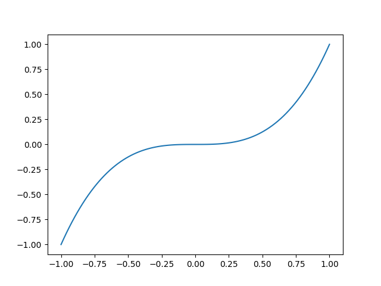

Note
Go to the end to download the full example code.
Test plot
Let’s first try a test.
- 
import numpy as np
import matplotlib.pyplot as plt
x = np.linspace(-1, 1, 100)
y = x ** 2
plt.figure()
plt.plot(x, y)
y = x ** 3
plt.figure()
plt.plot(x, y)
plt.show()
Total running time of the script: (0 minutes 0.217 seconds)